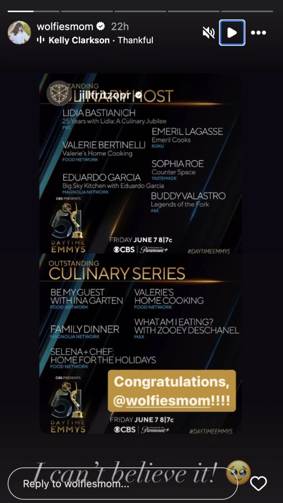

Congrats are in order to longtime Food Network star and actor Valerie Bertinelli. On April 19, Bertinelli’s now-canceled Food Network show, “Valerie’s Home Cooking,” was nominated for two Daytime Emmys: one for outstanding culinary series, and one for Bertinelli as outstanding culinary host. After the nominations were announced, the celeb chef took to her Instagram Stories to react to the news. In one post she wrote, “I am speechless!!” over a screenshot of the Daytime Emmy announcement. In a following slide, which highlighted the show’s two nominations, she captioned a similar screenshot with the message, “I can’t believe it!” She also shouted out her show’s team, calling them “The absolute best team,” in a third Instagram Story.

Bertinelli's Emmy nods come after the Food Network star revealed that she was unhappy with the current direction of network. In a post shared to Threads on April 9, Bertinelli responded to a post that reminisced about “actual cooking shows” on the network.